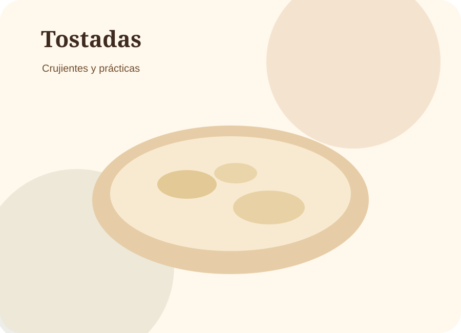
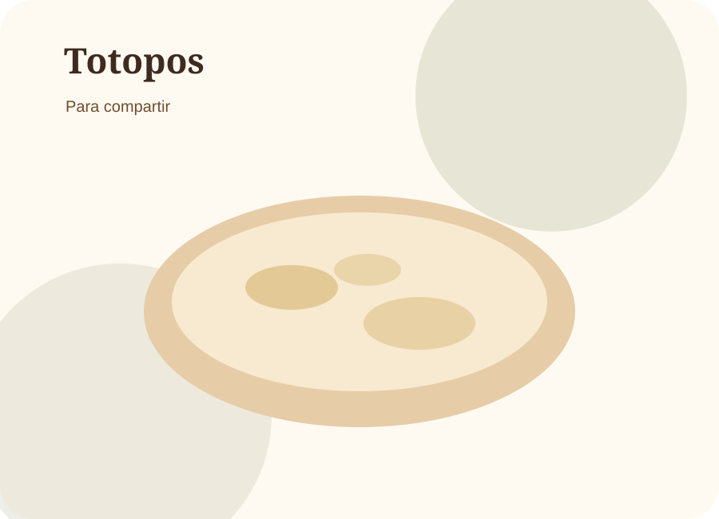
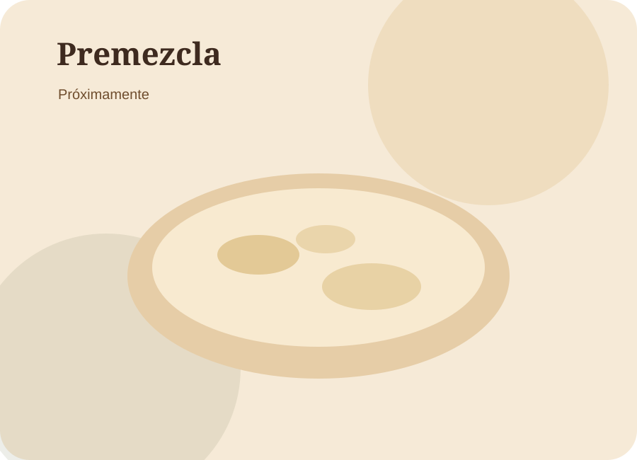
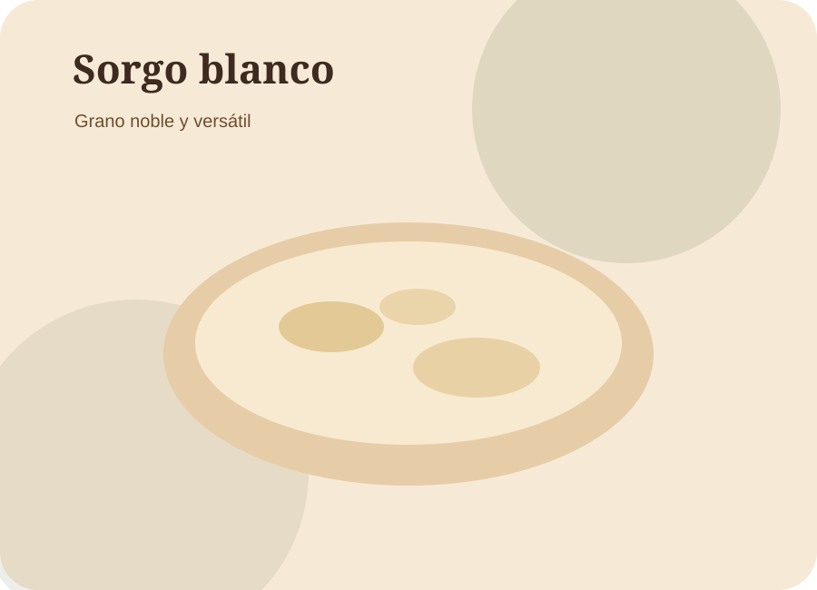

Tortilla de sorgo blanco
Suave, versátil y diferente para acompañar tus comidas diarias.
Pedir ahoraTortillería · sorgo blanco · alimento real
Espiga Blanca nace para ofrecer una alternativa diferente para la mesa mexicana: productos elaborados con sorgo blanco, hechos con cuidado, identidad regional y visión de futuro.

Nuestra idea
Nuestro local es el primer canal comercial de Espiga Blanca, pero también es el espacio donde probamos recetas, escuchamos a los clientes y mejoramos textura, sabor, rendimiento y consistencia.
Queremos construir una marca confiable de tortillas, tostadas, totopos y productos derivados del sorgo blanco.
A largo plazo buscamos desarrollar harina/premezcla, distribución y soluciones para nuevos puntos de producción.
Productos
Productos pensados para hogares, restaurantes, tiendas y negocios que buscan una alternativa diferente.
Suave, versátil y diferente para acompañar tus comidas diarias.
Pedir ahora

Una opción diferente para acompañar salsas, guacamole, frijoles o platillos regionales.
Pedir ahora
Estamos desarrollando una mezcla base para producir tortilla de sorgo blanco de forma consistente.
Solicitar informaciónEl grano
El sorgo blanco es un grano noble y versátil. En Espiga Blanca lo trabajamos como una alternativa alimenticia con potencial para integrarse a la mesa diaria y para impulsar nuevas cadenas productivas.
Nuestra propuesta no es vender una moda: es desarrollar un producto real, con mejora continua, sabor agradable y un proceso que pueda crecer con orden.

Proceso
Cada lote nos ayuda a mejorar textura, sabor, rendimiento y consistencia.
Partimos de sorgo blanco y cuidamos la calidad de la materia prima.
Preparamos la base para lograr una masa manejable y consistente.
Formamos y cocemos las tortillas cuidando textura, resistencia y sabor.
Escuchamos al cliente y ajustamos el proceso de forma continua.
Información clara
Nuestros productos están elaborados con sorgo blanco. La información nutrimental exacta depende de la formulación final, porción, proceso y análisis correspondiente.
No inventamos datos: los valores se actualizarán con base en análisis o cálculo profesional.
Propósito
Buscamos consistencia, buen sabor y buena presentación en cada producto.
Comunicamos con claridad, sin prometer milagros ni inventar datos.
Respetamos la cultura alimentaria mexicana y exploramos nuevas alternativas.
Queremos impulsar oportunidades alrededor del sorgo blanco y la producción local.
Pedidos
Llena los datos y se generará un mensaje listo para enviar. Puedes pedir para consumo familiar, eventos, restaurantes o negocios.
Mayoreo y distribución
También atendemos pedidos para restaurantes, cocinas, tiendas, eventos y negocios interesados en productos de sorgo blanco. Contáctanos para opciones de suministro o colaboración.
Solicitar informaciónContacto
[Agregar dirección]
[Agregar horarios]
[Agregar número]
[Instagram / Facebook]